Data Preparation and EDA
Data Preparation and Exploratory Data Analysis
Where the Data Came From
The core dataset for this project is a healthcare claims dataset pulled from Kaggle, containing 10,000 individual claim records with fields like patient age, diagnosis and procedure codes, claim amount, insurance type, state, and a fraud flag. This is the foundation everything else in the project builds on, since it's the only source that actually has claim-level detail rather than aggregated statistics.
Link to raw dataset (Kaggle): Healthcare dataset
On its own, this dataset only tells half the story. It shows what people were billed and approved for, but it says nothing about whether that amount is high or low relative to what someone with that same insurance type, in that same state, would normally be expected to pay. Without something to compare against, there's no real way to judge whether a claim looks reasonable or unusual, which matters a lot for a project centered on pricing and risk.
That's why three additional datasets from the Kaiser Family Foundation (KFF) were brought in, each giving an average cost benchmark for a different type of coverage, by state:
Medicaid Spending per Enrollee by State: Medicaid Premiums
Medicare Spending per Beneficiary by State: Medicare Premiums
Marketplace Average Monthly Benchmark Premiums by State: Private Premiums
Why the Premium Data Had to Be Merged In
Merging these three sources into the main claims dataset gives every row a real, external point of comparison. Instead of just knowing what a claim cost, it becomes possible to ask whether that cost lines up with what's typical for that person's insurance type and state, which is exactly the kind of signal that matters for risk-based pricing and for spotting claims that look out of place. It's also what made a chart like the state and insurance type comparison possible in the first place, since without an outside benchmark, there would be no way to tell that Medicaid and Medicare premiums run so much higher than actual claim costs while Private and Self-Pay stay much closer to what people are really being charged. That gap only becomes visible once the claims data and the premium data are sitting in the same table.
How the Data Was Actually Gathered
All four files were gathered the simple way, by downloading them directly as CSVs rather than pulling them through a live API. The Kaggle dataset came as a single CSV download from its dataset page, and each KFF page has a built-in download button that exports the exact table shown on the page as a CSV, no login or key required.
An API-based route was looked into early on, specifically CMS's Procedure Price Lookup API, which would have connected each claim's procedure code to a national average cost. That path got dropped fairly quickly once it became clear it required an active AMA license number just to request an API key, since CPT procedure codes are AMA-copyrighted content, not open government data. Getting that license set up wasn't realistic given the project timeline, and it would have added a real barrier for something meant to be reproducible without a paid license sitting behind it. Sticking with direct CSV downloads from Kaggle and KFF kept the data fully free, transparent, and something anyone reviewing this project could go pull themselves without hitting a paywall or a licensing form.
Raw Data vs. Cleaned Data
The image below shows a small slice of the dataset exactly as it came from Kaggle, before any cleaning or merging happened.
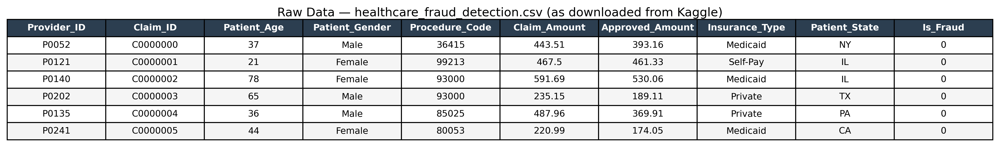
And here's that same slice after the cleaning and merging process, once premiums have been pulled in from the three KFF sources, blank insurance types have been labeled as “Other,” and missing values in a couple of columns have been filled in.
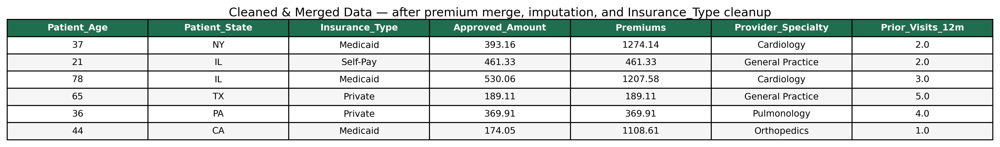
Exploratory Data Analysis
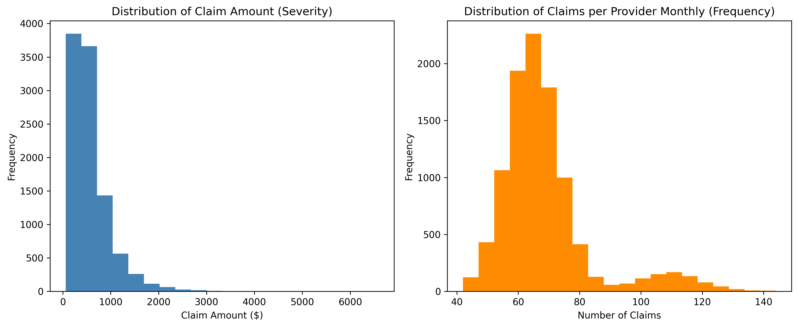
This chart shows two histograms side by side, one for how much claims typically cost and one for how often claims happen each month. The two shapes look nothing alike. Most claims are fairly cheap, with a long tail of expensive outliers pulling the cost distribution to the right, while the frequency side looks much more balanced and predictable, clustering around 60 to 70 claims a month. This is exactly the point behind separating frequency and severity in insurance pricing. If you only looked at total dollars lost, you'd never know whether that number came from a lot of small claims or a few very expensive ones, and those two situations call for completely different pricing strategies.
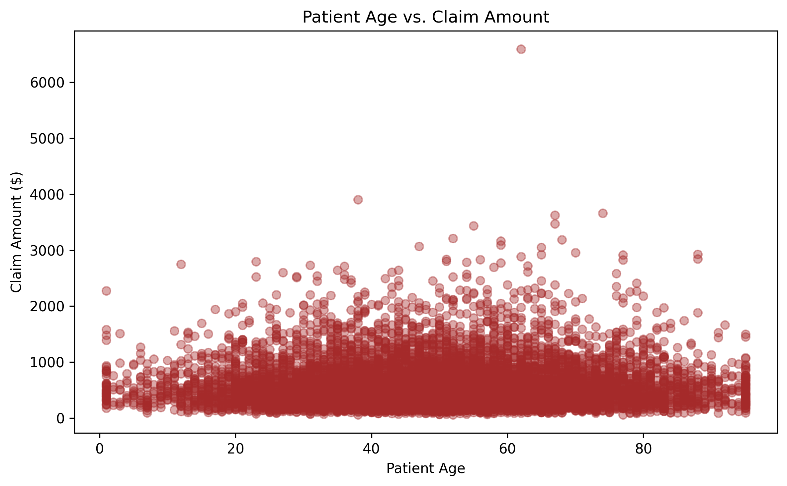
Here, every patient's age is plotted against how much their claim cost, to see if getting older comes with bigger claims. It really doesn't. Claim costs stay scattered across every age group in a pretty similar way, with most people, young or old, filing claims under $1,500. This matters because it pushes back a little on the assumption that age alone can explain risk. If age isn't doing much of the work, insurers relying too heavily on it for pricing might be missing the variables that actually matter.
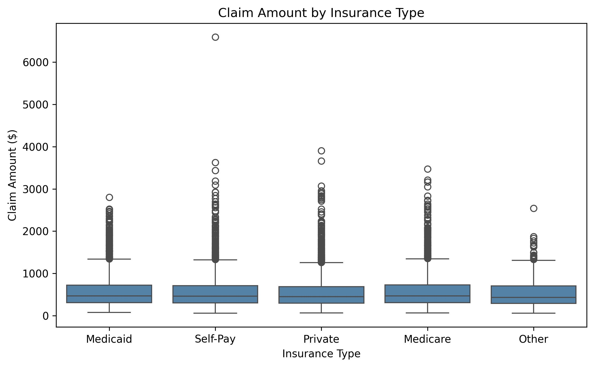
This boxplot lines up claim costs for Medicaid, Medicare, Private, Self-Pay, and Other side by side. What stands out is how similar they all look. The median cost and the spread of expensive outliers are nearly identical across every insurance type. That's a meaningful finding for this project because it suggests that how a claim gets paid for doesn't really change how expensive that claim tends to be, which raises the question of why premiums might still differ so much between these groups, something the later charts dig into directly.
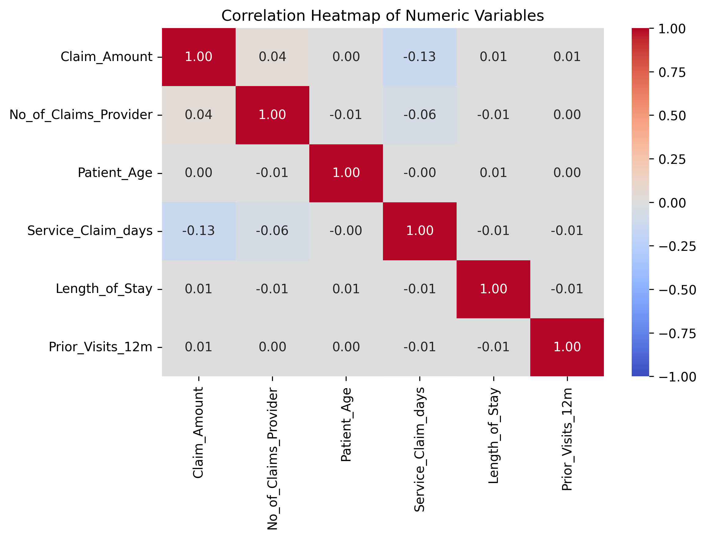
This heatmap checks whether any of the numeric columns in the data move together, like whether older patients file bigger claims, or longer hospital stays lead to higher costs. Almost none of them do. Everything sits close to zero, with only a small, weak link between claim cost and how many days pass before a claim gets submitted. This actually reinforces one of the central ideas behind this whole project: frequency and severity aren't simple, single-cause problems. If they were driven by one obvious factor, this heatmap would show it, and it doesn't, which is exactly why a more careful modeling approach is worth building.
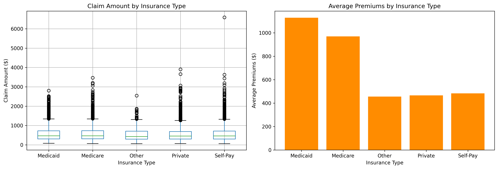
This one puts two things next to each other on purpose: what people are actually claiming, and what they're paying in premiums, both broken out by insurance type. The claim amounts barely move between categories, but the premiums are a different story entirely, with Medicaid and Medicare priced noticeably higher than the rest. That gap is worth sitting with. If the actual cost of claims is roughly the same everywhere, but the price of coverage isn't, it starts to look like pricing isn't just reacting to risk. That's really the heart of what risk-based pricing is supposed to solve.

This bar chart ranks the eight states by how expensive their average claim tends to be. Texas and New York come out on top, while Illinois and Florida sit at the bottom. Even with only eight states in the picture, there's real variation here, which is a reminder that location isn't a neutral detail. Where someone lives can shift their expected costs, and that's useful information for anyone trying to price insurance more accurately by region instead of treating the whole country the same way.
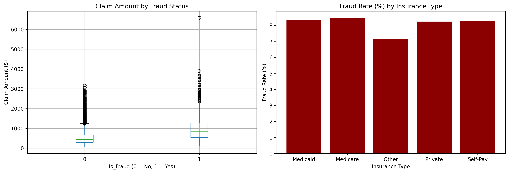
The first half of this chart compares claim costs for fraudulent versus legitimate claims, and the second half breaks down how often fraud shows up across insurance types. Fraudulent claims tend to run noticeably higher in cost, but the rate of fraud itself stays pretty steady across insurance types, sitting somewhere around 7 to 8.5 percent. This connects severity directly to fraud detection, since it suggests that unusually expensive claims might be one of the more useful signals for flagging something that needs a second look, regardless of what kind of coverage the patient has.
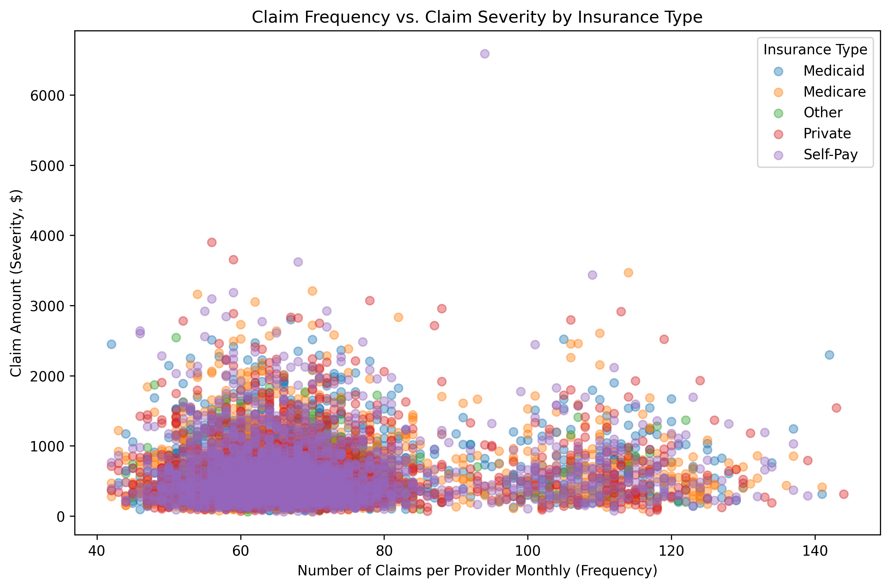
This scatter plot puts frequency on one axis and severity on the other, colored by insurance type, to see if providers with a lot of claims also tend to have expensive ones. They don't. High-frequency providers show just as much of a mix of cheap and costly claims as low-frequency ones. This is probably the clearest visual argument in the whole set for why this project treats frequency and severity as two separate problems instead of one. You genuinely can't predict one from the other here, so a model that only looks at one side of that equation would be missing half the picture.
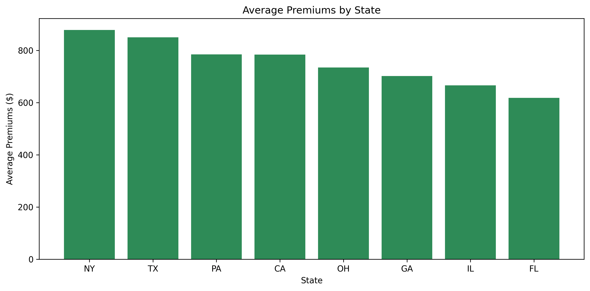
This chart ranks the same eight states again, but this time by average premium instead of average claim cost. New York and Texas again come out highest, and Florida and Illinois again come out lowest. On its own, this just shows that premiums vary by state, but the real value comes from comparing it side by side with the claim-cost-by-state chart, to see whether states that charge more are actually the ones generating more expensive claims, or whether pricing and real cost have drifted apart.
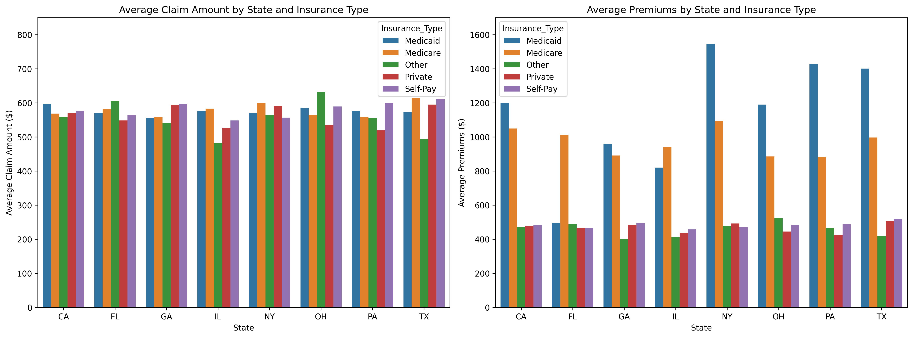
This last one pulls both of those threads together into a single comparison, breaking down claim cost and premiums by state and insurance type at the same time. Lining them up side by side makes a pattern jump out immediately: claim amounts barely shift no matter which state or insurance type you're looking at, but premiums swing wildly, especially for Medicaid and Medicare, which run two to three times higher than Private or Self-Pay in almost every state. That gap is really the whole reason this project exists. If premiums were tightly tied to actual risk, you'd expect them to track claim costs a lot more closely than they do here, and this chart is the clearest evidence in the entire EDA that they don't.
Note: Notably, this reveals a disconnect between premium pricing and actual claim behavior: while claim amounts remain fairly uniform across insurance types, premiums for Medicaid and Medicare are consistently two to three times higher than Private or Self-Pay premiums in every state, raising the question of whether current premium structures are closely tied to real claims risk.